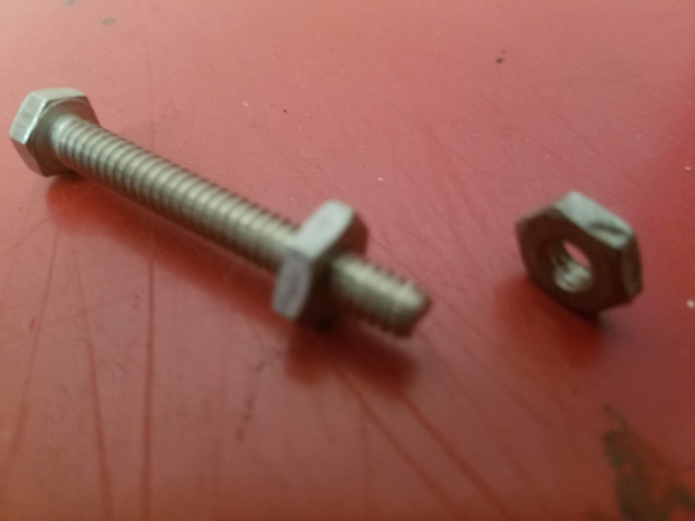
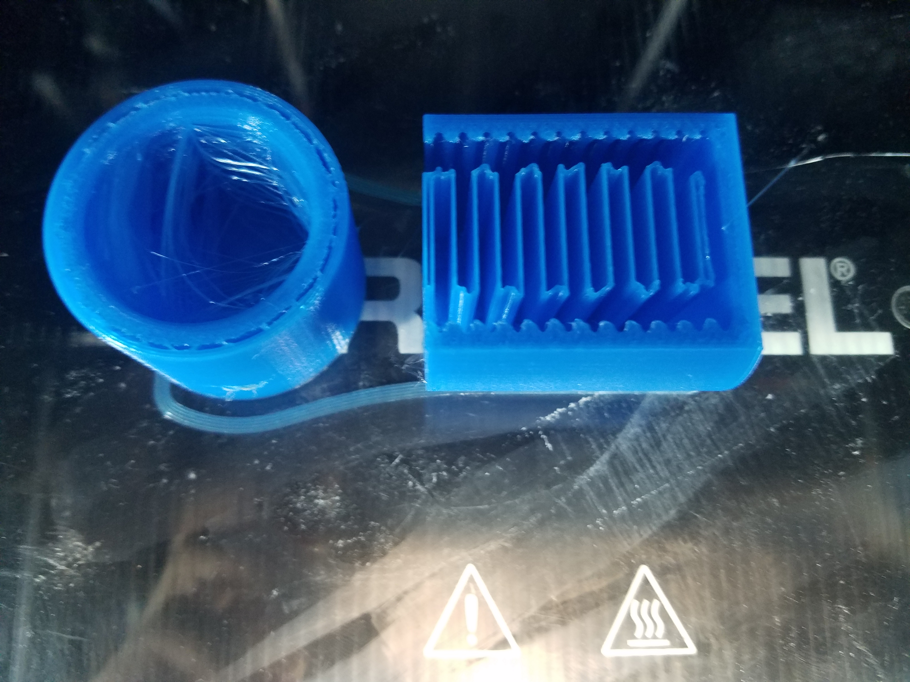
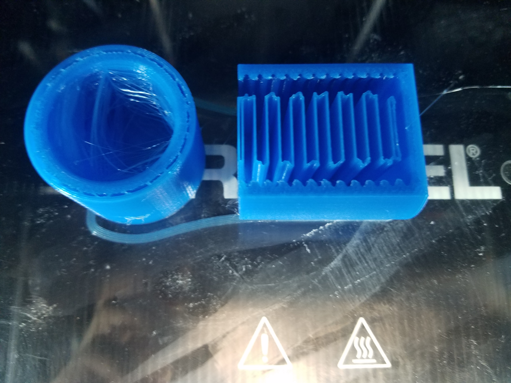
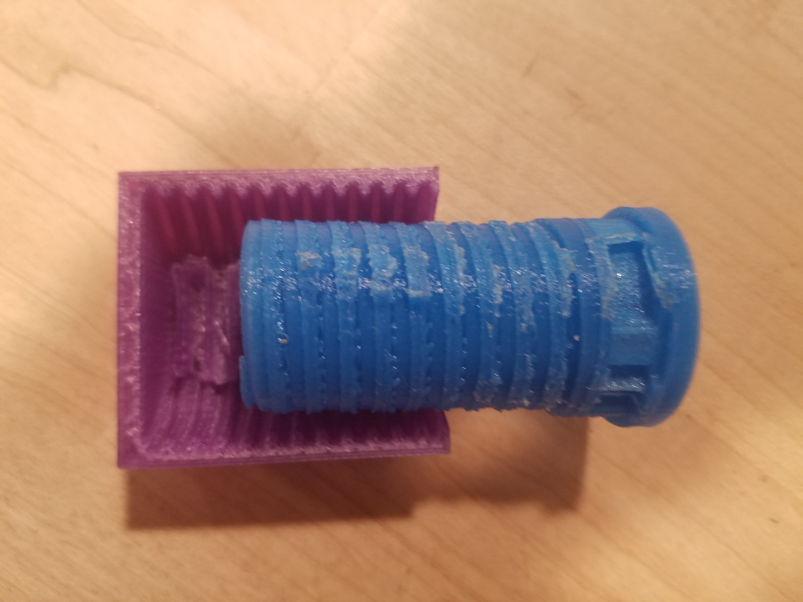
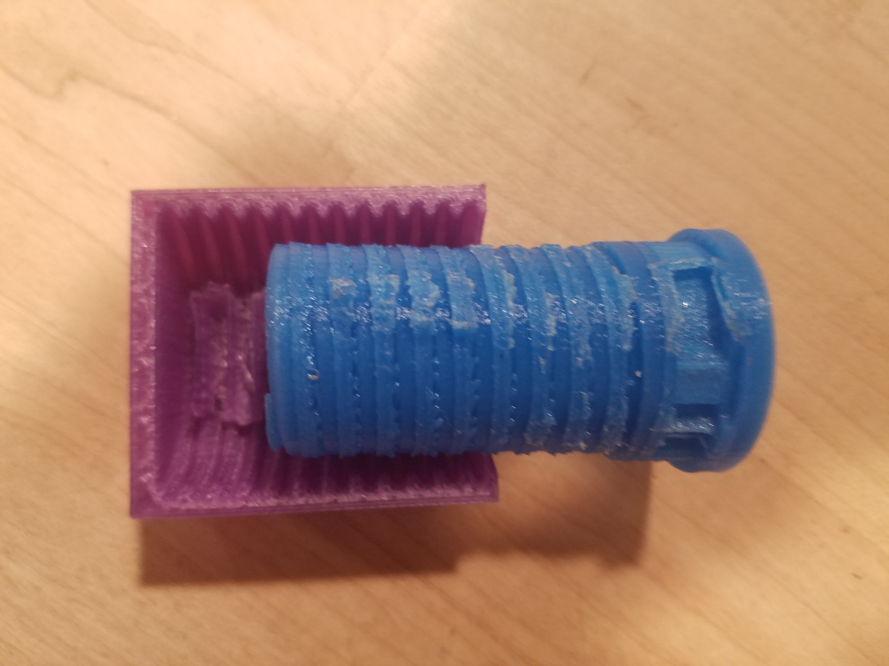
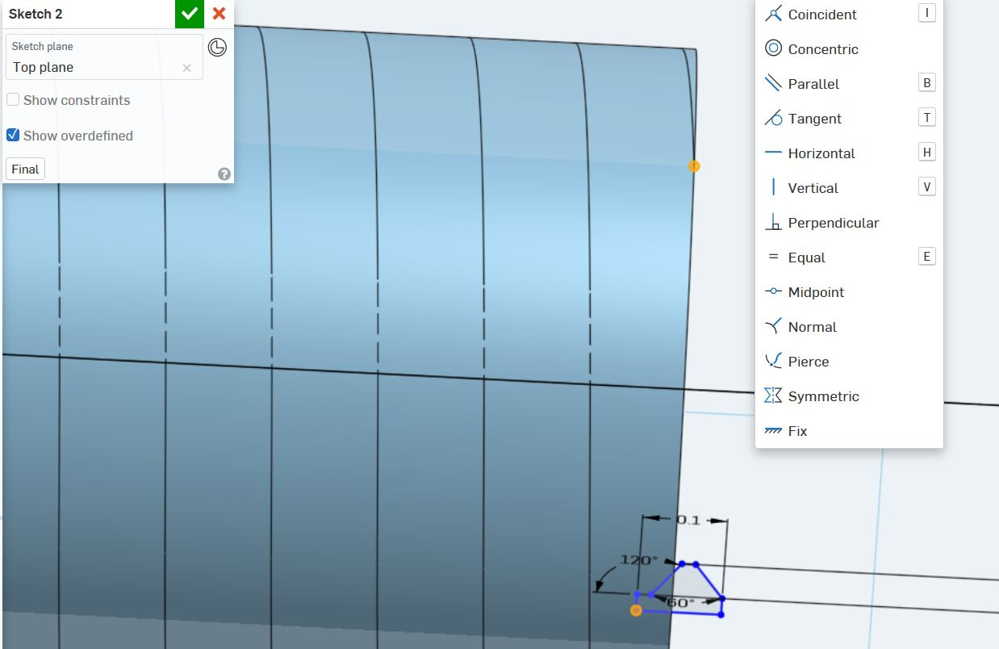
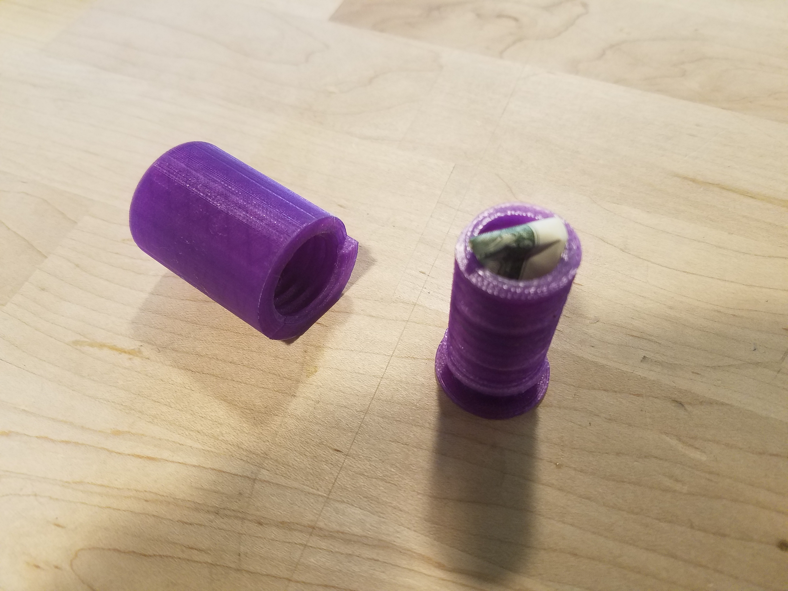

Lukas' Assignment 4: 3D Printed Screw Compartment!
Overview:

Synthesis / Define
Design prompt criteria:Ideation / Develop
Originally I wanted to create a threaded screw with a simple threaded nut.
The goal was to keep it simple, so I found thread dimensions in the "Machinery's Handbook".
After exploring Onshape, I discovered the "Shell" tool which allowed me to create a Compartment inside of the screw.
This adjustment influenced the top down design approach to modeling the screw and Cap.

Test / Implementation / Deliver
As per usual with Digital Fabrication, tweaking the models and the print outs is a necessrey portion of the process.
In the end, this print required multiple printers to successfully produce models.
In total about three Dremel printers "brokedown" while personally in-use and I was able to observe one being taken apart to be repaired.
 

 

Problem:
After creating the screw with 10 threads per inch in the original sketch, I realized early on that I would encounter an error in the manufacturing process.
During the early stages of development I created the threads such that they created multiple disconnected threads; rather than one cohesive thread.
When a screw is manufactured, it is going through the subtractive process, thus the threads are cut out of the metal.
With this in mind, I reframed my approach to modeling the CAD model to consider the additive manufacturing process.



Solution:
I redesigned the sketch threads such that the thread cut out followed along a helix path of the male part piece.
In the end, I used the male threads sketch to reverse engineer and draw the cap piece into a new a part.
This required me to learn about the "Pierce" constraint which allowed me to constrain a sketch with another feature.
The final threads parts move exceptionally well with a ~.05" clearance between threads.


Reflection
In hindsight, I should have considered the thread path of the female holder before printing the first batch.
Overall, I am satisfied with this print model.
It feels like the first time the entire creative process of modeling process and printing has been a personal achievement.
Specifically, when the final print rotate freely along the thread path it's a very satisfying feeling.
Attribution:
Joshua and the Tuesday night Crew (Dhwani Vekaria, Julie Do, Demarcus, and Julie Rose) helped each other out with best practices.
Machine Settings: